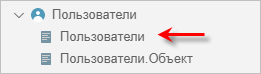
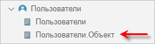

Типы встроенного языка, порождаемые элементом проекта вида «Пользователи»
В любом проекте есть пользователи. Это предопределенный элемент проекта, который описывает пользователей, подключенных к приложению.
Этот элемент проекта создает «1С:Кабинет сотрудника». Его не видно в структуре проекта. Но во встроенном языке существует несколько типов для работы с его данными:
- Пользователи
- Пользователи.Ссылка
- Пользователи.Объект
- Пользователи.Данные
Тип Пользователи
Тип Пользователи доступен на сервере.
Он содержит методы для работы с пользователями, подключенным в приложение и ссылками на них. Например, Найти(), ПолучитьСсылку(), Подключить(), СделатьАдминистратором().
Также он позволяет пересчитать ключи доступа — ПересчитатьКлючиДоступа() (подробнее).
Этот тип не имеет конструктора и имеет единственный объект, обращение к которому выполняется по имени типа:
// Получить менеджера пользователей
пер МенеджерПользователей = ПользователиМодуль пользователей
Поскольку Пользователи — это предопределенный элемент проекта, который вам недоступен, вы не можете изменять непосредственно его модули. Однако вы можете расширить этот предопределенный элемент проекта, добавив в свой проект элемент вида Пользователи. И уже у этого своего элемента вы можете создать модуль.

В проекте модуль, расширяющий тип Пользователи, называется модулем пользователей. Он исполняется на сервере.
Вы можете расширить этот тип, добавив в него собственные публичные методы. Например, метод, возвращающий список пользователей-администраторов:
// Возвращает список пользователей-администраторов
@проект
метод Администраторы(): Массив<Пользователи.Ссылка>
пер Администраторы: Массив<Пользователи.Ссылка>
// Получить список пользователей-администраторов.
// ...
возврат Администраторы
;Этот метод будет доступен в других модулях:
// Вызов метода разработчика у менеджера пользователей
пер СписокАдминистраторов = Пользователи.Администраторы()Тип Пользователи.Ссылка
Тип Пользователи.Ссылка доступен и на клиенте, и на сервере.
Он предназначен для описания ссылки на одного подключенного пользователя.
Он имеет конструктор новый Пользователи.Ссылка(), который позволяет создать новую ссылку по Ууид и метод ЗагрузитьОбъект(), который есть только на сервере и который позволяет получить объект (Пользователи.Объект) из ссылки (Пользователи.Ссылка).
Тип Пользователи.Объект
Тип Пользователи.Объект доступен на сервере.
Объект этого типа содержит данные одного подключенного пользователя и предназначен только для их чтения.
Модуль пользователя
Поскольку Пользователи — это предопределенный элемент проекта, который вам недоступен, вы не можете изменять непосредственно его модули. Однако вы можете расширить этот предопределенный элемент проекта, добавив в свой проект элемент вида Пользователи. И уже у этого своего элемента вы можете создать модуль.

Модуль, расширяющий тип Пользователи.Объект, называется модулем пользователя. Он исполняется на сервере. В нем вы можете обработать такие события как:
- ПослеПодключения
- ПослеИзменения
- ПослеОтключения
Вы можете расширить этот тип, добавив в модуль пользователя собственные публичные методы. Например, метод, обновляющий сведения о пользователе:
@проект
метод ОбновитьСведенияПользователя()
// Записать сведения о пользователе в отдельный справочник.
// ...
;Этот метод будет доступен в других модулях:
// Вызов собственного метода пользователя
// В переменной Администратор находится значение типа Пользователи.Объект
Администратор.ОбновитьСведенияПользователя()Тип Пользователи.Данные
Тип Пользователи.Данные доступен на сервере.
Он используется только в обработчике события Пользователи.Объект.ПослеИзменения.
Он не имеет конструктора. «1С:Кабинет сотрудника» сам создает объект этого типа при наступлении упомянутого события. Он передает в обработчик события объект этого типа, наполненный «старыми» значениями.